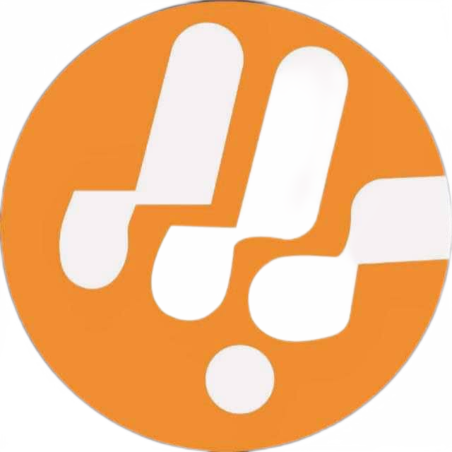

Compssa Logo
“Genius”; “A step Ahead”
To promote and protect the positive reputation of Computer Science students and transform them into problem-solvers after school
i.Developing and promoting academic cooperation among students, such as study groups and peer tutoring.
ii.Examining and discussing matters of mutual interest related to computer science education and technology.
iii.Fostering staff-student interaction through events and activities, such as guest lectures and research collaborations.
iv.Collaborating with other organizations to achieve the above aims, such as other student associations and professional organizations.
v.Organizing social events and activities that promote community building and networking among students.
vi. Collaborating with other student associations and university societies to promote shared interests and objectives.
vii. Participating in university-wide events and initiatives to showcase the importance of computer science education and technology.
viii. Providing resources and support to members to enhance their education and career development.
ix. Advocating for the interests and needs of members within the university community.
x. Creating opportunities for members to gain experience and skills relevant to their future careers.